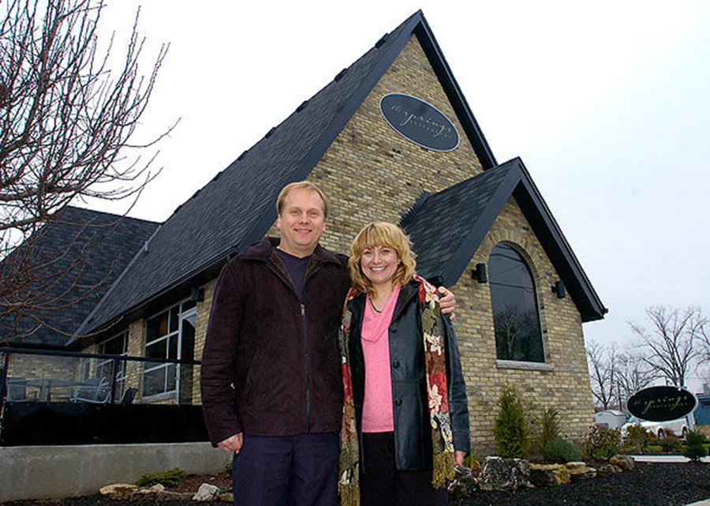

A restored church, a working kitchen, and people who live here.
The Springs is a casual fine-dining bistro on Springbank Drive in London, Ontario. The building was a church. The kitchen is ours.
We cook with fresh, locally sourced ingredients. We run the dining room the way we'd want to be treated if we walked in. Quiet when you want quiet, lively when you want lively, never stiff.

A building worth restoring, restored.
Arched windows, exposed brick, pitched ceilings, real wood floors. The church's bones shape the room. Dinner service feels different because of it. Weddings in particular feel like they belong.
Complimentary parking is on site. The main entrance is wheelchair accessible. We'll find you the table that fits the night you're having.
See the room
Farm to table, meant literally.
Our menu changes with what's in season and what's coming in from nearby farms. We don't print a list in January and pretend it applies in July.
The kitchen works with what the growers have. If something runs out, something else takes its place. The result is a list that reads a little differently every few weeks, and a plate that tastes like the month you're in.
What's on the menu
We host the days people remember.
Weddings under the peaked ceiling. Corporate dinners in the private room. Bridal showers on long tables under white florals. Celebrations of life for families who need a quiet place and warm food. We've hosted all of it. We've hosted most of it more than once.
How events workThe things worth saying out loud.
Parking on site
Complimentary parking for guests. No paid lot around the corner, no hunt for a spot on the street.
Wheelchair accessible
Step-free entry to the main dining room and the private room.
Call or text
Reach us at (519) 657-1100. We answer the phone. Texts are fine too.